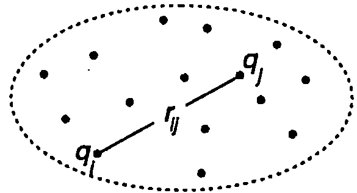
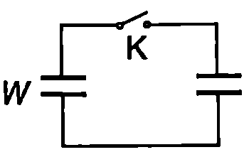

**Потенциална енергия на система от точкови заряди **
Както е известно от механиката (вж. част 1, \ref{sec:11}), система от материални точки, които взаимодействат с консервативни сили, се характеризира с потенциална енергия. По определение тя е равна на работата, която извършват консервативните сили при отдалечаване без ускорение на материалните точки на безкрайно големи разстояния една от друга. Когато материалните точки са безкрайно отдалечени, приема се, че потенциалната енергия на системата е нула.
Тъй като кулоновите сили на взаимодействие между точкови заряди са консервативни, всяка система от такива заряди също се характеризира с потенциална енергия. Да разгледаме най-простия случай, когато системата е съставена само от два точкови заряда и , разположени на разстояние един от друг. Зарядът създава електростатично поле, чийто потенциал в точката, където се намира зарядът , е . По определение потенциалът на една точка е равен на работата на електричните сили за пренасяне на единица положителен заряд от тази точка до безкрайно отдалечена точка (ще казваме на безкрайност), къде то потенциалът е приет за равен на нула. Следователно работата за пренасяне на заряда 2 на безкрайност е , а потенциалната енергия на системата от два точкови заряда е
Същият резултат ще получим, ако оставим заряда неподвижен и пресметнем работата на електростатичните сили при пренасяне без ускорение на заряда на безкрайност. Формула \eqref{eq:49.1} отчита знака на зарядите: когато те са едноименни, потенциалната енергия е положителна, докато система от два разноименни заряда има отрицателна потенциална енергия. Действително, разноименните заряди се привличат, затова при раздалечаването им на безкрайност електричните сили извършват отрицателна работа и потенциалната енергия също е отрицателна.
Да разгледаме система от точкови заряда . Съгласно с принципа на суперпозицията взаимодействието на кои да е два заряда от системата не зависи от присъствието на останалите заряди и се определя от закона на Кулон. Следователно пълната енергия на системата е сума от членове, отразяващи взаимодействието на всички възможни двойки от заряди. Нека и да са два произволни заряда от системата, разстоянието между които е (Фиг. \ref{fig:49.1}). Потенциалната енергия на взаимодействие на тази двойка е . Потенциалната енергия на цялата система е
Множителят 1/2 отчита, че потенциалната енергия на всяка двойка заряди при сумирането влиза два пъти: веднъж като и втори път като . Уравнение \eqref{eq:49.2} се записва и във вида
където
е потенциалът на полето, създадено от всички заряди (с изключение на заряда ) в точката, в която е разположен зарядът .
\begin{figure}[h!] \centering  \caption{} \label{fig:49.1} \end{figure}
**Потенциална енергия на система от заредени проводници **
Да разгледаме отделен проводник със заряд и потенциал . Разделяме мислено повърхността на проводника на много голям брой малки елементи със заряди които образуват система от точкови заряди. За да определим потенциалната енергия на тази система, ще използваме уравнение \eqref{eq:49.3}, като отчетем, че повърхността на проводника е еквипотенциална, т.е. всички заряди се намират в точки с еднакъв потенциал . Тогава
Доказва се, че потенциалната енергия на система от проводника със заряди и потенциали e
Уравненията \eqref{eq:49.3} и \eqref{eq:49.6}, изразяващи потенциалната енергия съответно на система от точкови заряди и на система от заредени проводници, са еднакви. Те обаче имат различно физично съдържание. Потенциалът , в уравнение \eqref{eq:49.6} е действителният потенциал на повърхността на -тия проводник, докато в уравнение \eqref{eq:49.3} е потенциалът на полето, което създават всички останали точкови заряди (без -тия) в точката, в която е разположен -тият заряд. Действителният потенциал в точка, където се намира точков заряд, е неопределена величина. (Ако изходим формално от уравнение \eqref{eq:46.6} той би трябвало да е безкрайно голям.) Вътрешната структура и разпределението на заряда в частиците, които се приемат за точкови заряди, е въпрос, който излиза извън рамките на електростатиката.
Другото принципно важно различие се състои в това, че потенциалната енергия на система от заредени проводници винаги е положителна, докато система от точкови заряди може да има и отрицателна енергия (например система от два разноименни заряда). Това различие се дължи на факта, че потенциалната енергия на система от проводници включва както енергията на взаимодействие между проводниците, така и собствената енергия на всеки отделен зареден проводник. Енергията на взаимодействие се дефинира чрез работата на електричните сили при отдалечаването на проводниците на безкрайност тя може да бъде както положителна, така и отрицателна. Собствената енергия е равна на работата на електричните сили при пренасяне на зарядите от всеки отделно взет зареден проводник (в отсъствие на останалите) на безкрайност. Тъй като зарядите върху проводника са едноименни, те се отблъскват и тази работа е положителна положителна е и собствената енергия. Доказва се (вж. пример 49.2), че собствената енергия винаги е по-голяма от енергията на взаимодействие. Затова пълната енергия на системата е положителна.
При точковите заряди потенциалната енергия се състои единствено от енергията на взаимодействие на зарядите. Електростатиката не отчита собствената енергия на отделния точков заряд. Такава величина изобщо не се дефинира, тъй като нейното въвеждане също изисква изясняване на вътрешната структура на обекта, наречен точков заряд.
Пример 49.1
Метална сфера с радиус заредена със заряд . Определете електростатичната потенциална енергия на сферата. \end{psexample}
Решение
Потенциалът на сферата е Съгласно с уравнение \eqref{eq:49.5} потенциалната енергия на заредения сферичен проводник е
Енергия на зареден кондензатор
Нека два проводника образуват кондензатор, който е зареден със заряд . Потенциалът на проводника с положителен заряд ще означим с , а на проводника с отрицателен заряд — с . Енергията на системата от два заредени проводника се изразява с уравнение \eqref{eq:49.6}:
където е напрежението на кондензатора. С помощта на съотношението , което дава връзката между напрежението и заряда на кондензатора ( е капацитетът), формула \eqref{eq:49.7} може да се запише във вида
Ще обърнем внимание, че получените формули за енергията на зареден кондензатор са в сила за всички кондензатори — плоски, сферични, цилиндрични, както и за кондензаторите, чиито електроди имат произволна форма.
Енергия на електричното поле
Дотук, по аналогия с механиката, разглеждахме енергията на система от неподвижни електрични заряди като потенциална енергия на частици, взаимодействащи от разстояние с консервативни сили. При такъв подход потенциалната енергия характеризира системата като цяло и въпросът, къде е локализирана тази енергия - върху самите заредени тела или в пространството между тях, няма смисъл. Алтернативният подход се основава на теорията на полето. Според него електричната енергия е разпределена в пространството, заето от полето, т.е. това е енергия на полето. В рамките на електростатиката принципно е невъзможно да се извърши опит, който да даде предимство на единия от тези два подхода. Причината е в това, че не е възможно да се отделят неподвижните заряди от полетата, които те създават. Големината и разпределението на зарядите еднозначно определя полето и обратно, ако се знае полето във всички точки на пространството, също така еднозначно може да се определят големините и разпределението на зарядите. Затова можем да говорим както за потенциална енергия на взаимодействие на заряди от разстояние, така и за енергия на електричното поле.
Ситуацията принципно се изменя, когато полетата са променливи. Както ще видим в~\ref{sec:86}, движещите се с ускорение електрични заряди излъчват електромагнитни вълни. Променливото електромагнитно поле на вълната съществува независимо от зарядите, които са го създали, и се разпространява в пространството, пренасяйки енергия и импулс. Съществуване то на електромагнитни вълни доказва, че електричната енергия, както и магнитната енергия, са локализирани в пространството — това е енергия на електромагнитното поле. Тъй като електростатиката е частен случай на електродинамиката, дори и в нея трябва да се даде предимство на теорията на полето и да се приеме, че електростатичната енергия е енергия на електростатичното поле, което от своя страна е час тен случай на електромагнитното поле.
Ще изразим плътността на енергията на електричното поле във вакуум, т.е. енергията в единица обем от пространството, заето от полето, чрез интензитета на полето. За целта разглеждаме частния случай на еднородно поле на зареден плосък кондензатор. Заместваме във формулата за енергията на кондензатора, , капацитета на кондензатора (-площ на всеки от електродите на кондензатора, — разстояние между електродите) и изразяваме напрежението на кондензатора чрез интензитета на полето: . След елементарни преобразования получаваме
където e обемът между електродите, т.е. обемът, зает от еднородното поле на кондензатора. Плътността на енергията е
Доказва се, че получената формула е в сила за всяко електрично поле: плътността на енергията на електричното поле във вакуум е правопропорционална на квадрата на интензитета на полето и на електричната константа .
Ако е известен интензитетът на полето във всяка точка от пространството, може да се определи плътността на енергията му и чрез интегриране да се пресметне пълната енергия на полето:
където интегрирането се извършва по обема , зает от полето.
Пример 49.2
Докажете, че собствената енергия на система от два заредени проводника винаги е по-голяма от енергията на взаимодействие на проводниците. \end{psexample}
Решение
Нека в произволна точка от пространството първият проводник създава електрично поле с интензитет , а вторият проводник поле с интензитет . Съгласно с принципа на суперпозицията интензитетът на полето в точка е . Вдигаме на квадрат двете страни на това равенство: Плътността на енергията на полето в точка е където и са плътностите на енергия на полетата съответно на първия и на втория проводник, а членът е плътността на енергията на взаимодействие.
От очевидното неравенство следва, че т.е. сумата от плътностите на собствените енергии на двата проводника в точка е по-голяма от плътността на енергията на взаимодействие. Тъй като точка е избрана произволно, този резултат е в сила за всички точки от полето. След като във всички точки от пространството е в сила неравенството , тогава след интегриране по цялото пространство получаваме където двата интеграла от лявата страна на неравенството изразяват собствената енергия на двата заредени проводника, а интегралът от дясната страна — енергията на взаимодействие.
Полученото неравенство показва, че собствената енергия винаги е по-голяма от енергията на взаимодействие. Знакът за равенство се отнася за частния случай, когато резултантното поле във всички точки от пространството е нула. На практика това е възможно само ако проводниците не са заредени.
Задачи
-
Енергията, запасена в кондензатор, е нараснала 4 пъти. Как са се изменили: а) напрежението на кондензатора; б) зарядът на кондензатора?
-
Мощен лазер използва кондензатор с капацитет , който е зареден до напрежение . Пресметнете енергията на кондензатора: а) в джаули; б) в киловатчаса.
-
Кондензаторна батерия е съставена от два кондензатора с капацитети и , които са свързани последователно. На батерията е подадено напрежение . Пресметнете запасената в нея електрична енергия.
-
Двата кондензатора от Фиг. \ref{fig:49.2} са еднакви. Единият е зареден с енергия , а другият не е зареден. Определете общата енергия на двата кондензатора след затварянето на ключа . Обяснете резултата. W \begin{figure}[h!] \centering  \caption{} \label{fig:49.2} \end{figure}
-
Протонът е изграден от два -кварка, всеки от които е носител на електричен заряд , и един -кварк със заряд . Като приемете трите кварка за точкови заряди, разположени във върховете на равностранен триъгълник със страна , пресметнете електричната потенциална енергия на:
а) подсистемата от два -кварка;
б) системата от три кварка.
-
Колко джаула електростатична енергия се съдържа в стая с обем ? Интензитетът на електричното поле на Земята е .
-
Метално кълбо с радиус е заредено до потенциал . Колко джаула количество топлина ще отдели при заземяването на кълбото?
-
Проводяща сферична сапунена ципа е заредена със заряд . Пресметнете работата на електричните сили при увеличаване на радиуса на ципата от до .
-
Два отдалечени сферични проводника с радиуси и са заредени до потенциали и . След това се съединяват сферите с тънък проводник (с пренебрежимо малък капацитет). Определете изменението на енергията на системата. Обяснете резултата.
-
Електрична система е съставена от две концентрични тънки метални сфери с радиуси и () и заряди съответно и . Определете: собствената енергия и на всяка от сферите, енергията на взаимодействие на сферите и пълната енергия на системата.